Фрески!

Немного из истории
Периодизация истории Критской цивилизации:
- Раннеминойский период (до бронзового века, 3650—2160 гг. до н. э.)
- Финальный додворцовый период (ранний бронзовый век, 2160—1900 гг. до н. э.)
- Раннедворцовый период (1900—1700 гг. до н. э.)
- Новодворцовый период (1700—1425 гг. до н. э.)
- Финальный дворцовый период (1425—1350 гг. до н. э.)
- Постдворцовый период (1450, в Кноссе 1350—1190 гг. до н. э.)
- Постминойский, или субминойский период (после 1170 г. до н. э.)
Список фресок Кносского дворца:
- Акробаты с быком
- Женщины
- Царь-жрец
- Олива
- Священная роща
- Трибуна
- Синие птицы
- Синие обезьяны
Памятники минойского языка
- Язык "критских иероглифов"
- Надёжно дешифровано около 30 знаков
- Язык Фестского диска и секиры из Аркалохори
- Язык линейного письма А
- Дешифровано частично, около 70 знаков отождествлено с линейным письмом Б